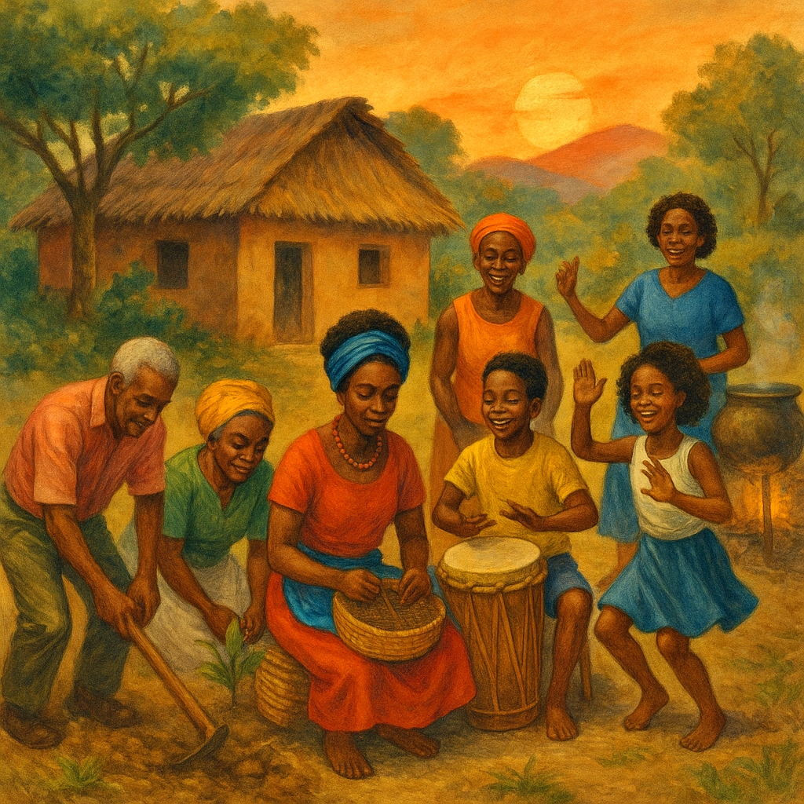
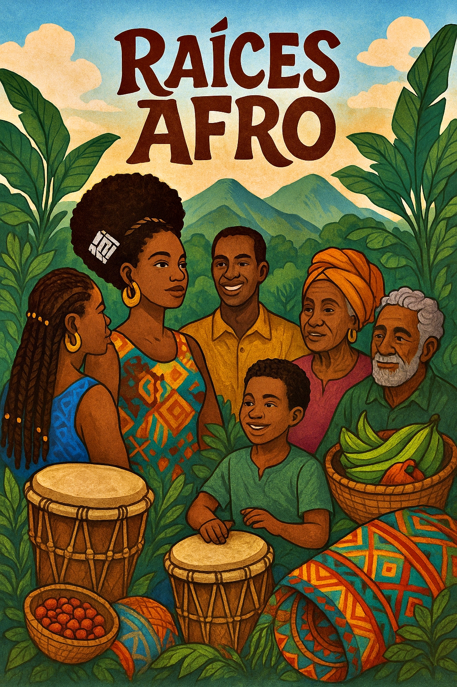

RAICES AFRO
Asociación de Personas Negras, Afrocolombianas, Raizales y Palenqueras de Colombia
Promoviendo los derechos, la cultura y el desarrollo de nuestras comunidades afrodescendientes en Colombia.
Diligenciar Formulario de Autorreconocimiento¿Quiénes Somos?
Somos una asociación afrocolombiana comprometida con la promoción, protección y reivindicación de los derechos de la población afrodescendiente en Colombia. Desde nuestra base en Agustín Codazzi, Cesar, trabajamos por la igualdad de oportunidades, la justicia social y el reconocimiento de la diversidad étnica y cultural del país. Impulsamos acciones comunitarias en defensa de los derechos humanos, el fortalecimiento económico, el acceso a la educación y la promoción de la cultura afrocolombiana.


Proyectos Destacados
Formación de Lideresas Afro
Un programa de capacitación para fortalecer las capacidades organizativas, políticas y sociales de las mujeres afrocolombianas en el departamento del Cesar.
Emprendimientos Comunitarios
Apoyo a iniciativas productivas de base comunitaria, que fomentan la economía propia y el empoderamiento territorial.
Cultura y Memoria Afro
Actividades de fortalecimiento de la identidad cultural, la oralidad, la música y las tradiciones del pueblo afrocolombiano.
Contáctanos
📍 Barrio El Carmen 24 – 94, Agustín Codazzi – Cesar
✉️ contacto@raicesafro.org
✉️ proyectos@raicesafro.org
✉️ gerencia@raicesafro.org
📞 +57 324 356 3455